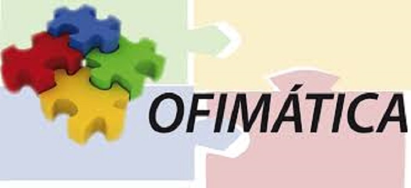
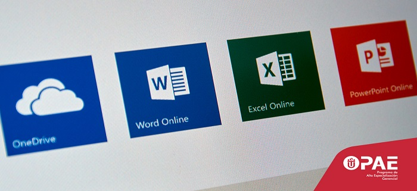

Inicio
Blog
Videos
Contacto

Ofimática
¿Qué es?

Oficce
Diversidad
Next
Previous
Qué es la ofimatica
Ofimática.
Ofimática es un acrónimo compuesto por los términos oficina e informática. El concepto, por lo tanto, hace referencia a la automatización de las comunicaciones y procesos que se realizan en una oficina.
Video explicativo 1:
Video explicativo 2:
Video explicativo 3: